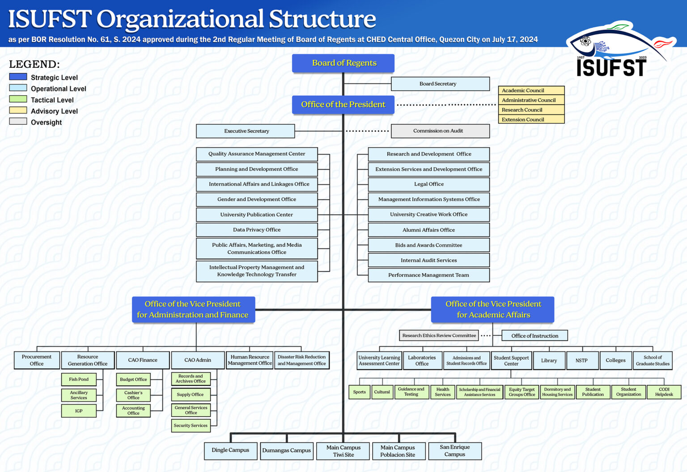

Mandate
To provide advanced education, higher technological, professional instruction and training in fisheries technology, arts and sciences, education, industrial technology, engineering, aquaculture, seaweed farming, and other related fields of study and as may be relevant to national development. It shall also undertake research, extension services, and production activities in support of the development of the Province of Ilolio and provide progressive leadership in its areas of specialization.
Mission
To produce globally competitive and empowered graduates in fisheries, agriculture, education, and technology, and to capacitate individuals and communities towards sufficiency for nation building.
Vision
A leading and empowering research university in fisheries, agriculture, education, and technology in Southeast Asia by 2030.
Guiding Principles
- I - Integrity
- S - Social Justice
- D - Discipline
- A - Academic Excellence
Guiding Principles
- I-Integrity
- S-Social Justice
- D-Discipline
- A-Academic Excellence
Key Officials
University President

Organizational Chart
Campuses
- Main Campus Tiwi Site
- Main Campus Poblacion Site
- Dingle Campus
- Dumangas Campus
- San Enrique Campus